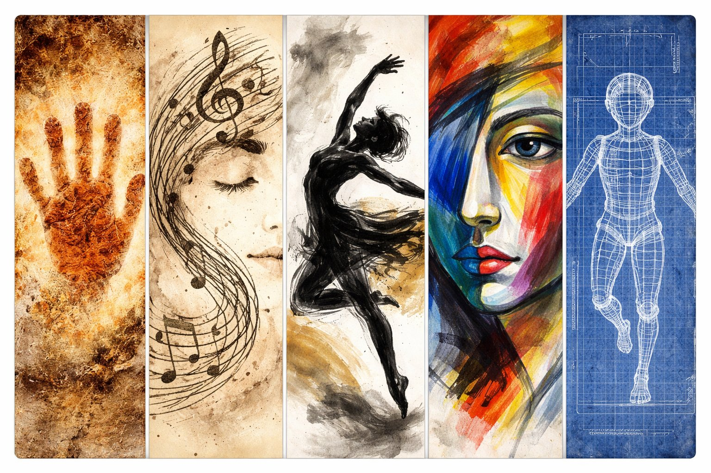
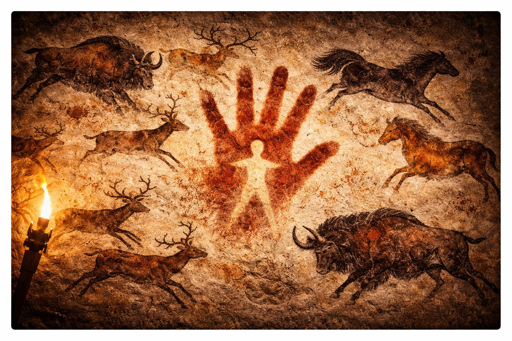
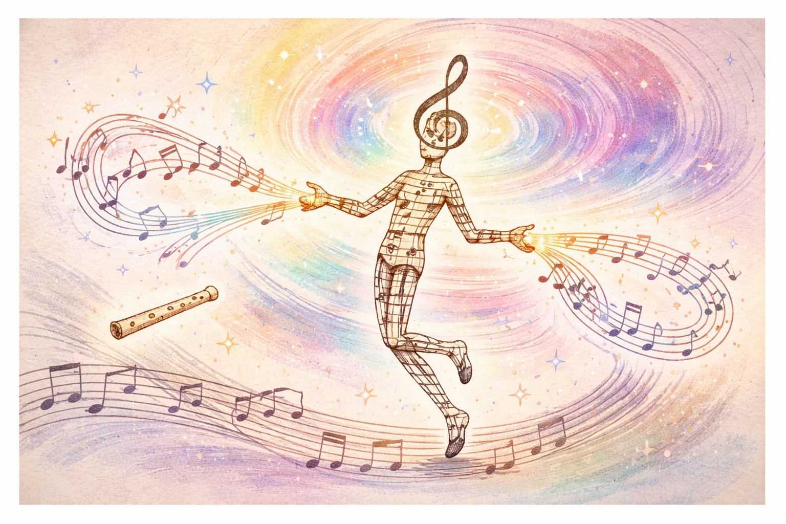
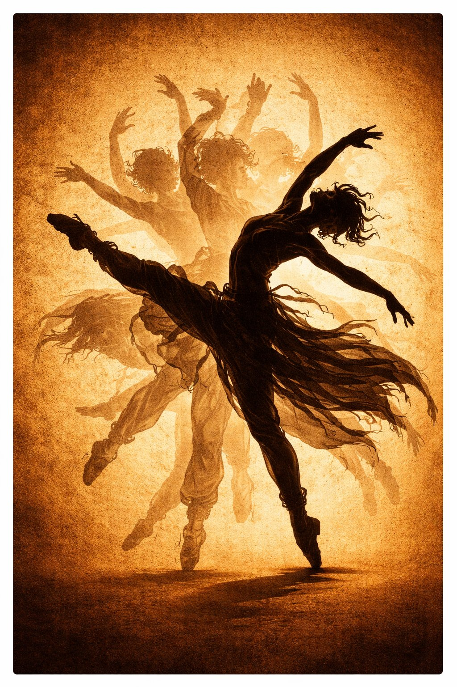
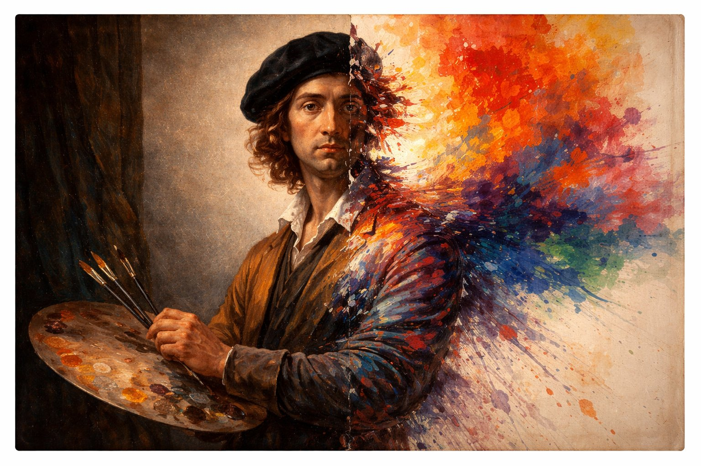

おなかが すいたら たべる。ねむかったら ねる。
でも にんげんは、おなかが すいていなくても えを かき、ねむくても うたを うたう。
なぜ にんげんは「いらないもの」を つくるのか？
こたえ：たぶん、にんげんには それが「いる」から。

カベエちゃんは 洞窟壁画。ラスコー（フランス）、アルタミラ（スペイン）。
約3万年前、たいまつの ひかりだけで 絵を えがいた。
だれかに みせるため？ 祈り？ まだ わからない。
でも：にんげんは、描かずには いられなかった。

オトさんは 音楽。いちばん ふるい 楽器は 約4万年前の 骨笛。
音楽は すべての 文化に ある。ない 文明は ひとつも ない。
脳の MRIで 調べると、脳の ほぼ ぜんぶの 領域 が はたらく。
にんげんの もっとも ふくざつな 活動のひとつ。

オドリは ダンス/舞踊。宗教儀式、祝祭、求愛、戦いの前の 鼓舞。
バレエ、日本舞踊、ヒップホップ、盆踊り ——
からだの うごきが そのまま ことばに なる 唯一の 芸術。

エノグは 絵画。壁画→フレスコ→油絵→印象派→抽象画→デジタルアート。
ルネサンスで「見たまま」、印象派で「見えかた」、抽象画で「見えないもの」を描いた。
絵画の 歴史は、「なにを かくか」の 問いの 歴史。
ケンチク先輩は 建築。実用と 美が いちばん ちかい 芸術。
シェルター→家→神殿→大聖堂→超高層ビル。
住む場所を つくることと、美しい空間を つくることは、同じになった。
🎨に おそわったこと — 「にんげんは、かかずには いられない」。
🎵に おそわったこと — 「ことばの まえに、おとが あった」。
💃に おそわったこと — 「からだは ことば」。
🖌️に おそわったこと — 「みえないものを かける、それが にんげん」。
🏛️に おそわったこと — 「はいれる げいじゅつが、いちばん おおきい」。
① 不要の必要 — 芸術は「なくても死なない」。でも「ないと人間じゃなくなる」。
② 普遍 — あらゆる文化に 絵と歌と踊りがある。芸術は人類の本能。
③ 進化 — 洞窟壁画からAIアートまで。道具は変わっても描きたい気持ちは変わらない。